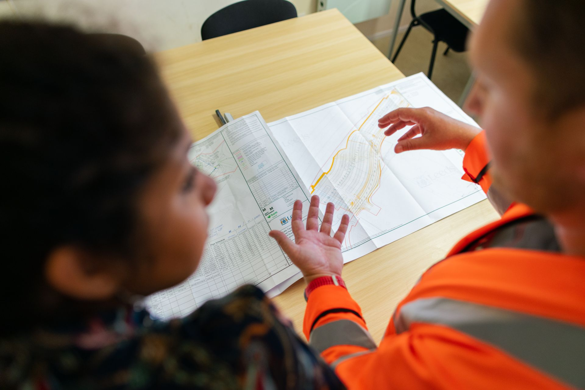

E-01 / Coordination
Infrastructure plans
Construction-composite drafting from coordinated plan PDFs and redlines, translating separate sources into a clearer shared reference.
02 / Engineering
My Civil Engineering Technology studies and production work connect survey information to the storm, water, sewer, land-development, and construction systems it supports.

E-01 / Coordination
Construction-composite drafting from coordinated plan PDFs and redlines, translating separate sources into a clearer shared reference.
E-02 / Hydrology
Coursework applying measured flow rates, storage-volume geometry, cross-section quantities, unit conversions, and documented calculations.
E-03 / Estimating
Academic and professional practice with direct-labor assumptions, overhead, fee development, scope definition, and responsible project decisions.
E-04 / Direction
Completing an A.A.S. in Civil Engineering Technology—Geomatics while preparing for a civil-engineering pathway focused on land development and infrastructure.